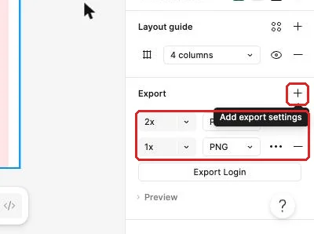

把設計整理成能重開、能量測的交付包
工作室的任務原型已完成修正，現在要讓接手工作的人找得到來源、看得懂設計意圖，並取得可直接使用的輸出與作品介紹。
從修正完成的原型接著整理
工作室的待處理清單已經走過單人任務測試。登入、長清單、詳情、取消、確認與完成結果都有紀錄，最嚴重的問題也已經修正。若只把幾張畫面圖片傳出去，接手工作的人仍然不知道原始尺寸、元件狀態、互動起點與畫面拉寬時該怎麼變化。
這次會接著使用修正後的 Figma 檔與測試紀錄，把散落的資訊整理成可重開、可量測、可核對的交付包。先從本堂起始材料確認來源與目標檔名，再用交付檢查表逐項重開來源、核對輸出與檢查資料夾。Photoshop 練習會使用本課提供的分層徽章，Figma 則輸出工作室流程的主要畫面。
沒有修正後的原型時，先回到任務測試與修正，依該頁的整合作品條件補做測試紀錄與修正版，約需二十到三十分鐘。完成後再回來整理，規格、標註與作品集才會對應目前真正要交付的版本。
交付要讓用途、做法與設計意圖都找得到
一份交付包要回答五個問題：原始設計放在哪裡、畫面規格怎麼讀、可直接使用的輸出有哪些、互動與響應式規則是什麼、設計曾經怎麼測。來源用來修改，輸出用來直接使用，規格與測試則交代尺寸、狀態、起點與修正結果。
規格不能只抄一串數字。每個數值都要對應物件、狀態與畫面；每個互動說明也要寫出觸發位置與結果。例如，按鈕除了高度與圓角，還要寫來源元件、Type、State、Label 與填色。清單畫面除了寬度，也要說明卡片拉寬、內容換行與底部導覽固定的規則。
本課從右側 Design 面板讀取 W、H、Padding、Gap、圓角與填色。選到文字層後，再讀字型、字級、行高、字重與文字顏色。量相鄰物件距離時，Windows 按住 Alt，Mac 按住 Option，再把游標指向相鄰物件。Starter 方案無法使用 Dev Mode，因此本堂會建立可重複使用的 Note（標註）元件，把必要資訊直接放在畫面旁。
輸出格式也依用途選擇。畫面預覽適合 PNG；手機用點陣圖通常需要 2x，讓高密度螢幕保留細節；線條圖示適合 SVG，因為放大縮小仍維持清楚。PSD 保存 Background、Card 與 Check 圖層；透明 PNG 提供完成後可直接放進網站的點陣輸出。
| 類型 | 主要用途 | 重開後要確認 |
|---|---|---|
.fig | 保存 Figma 可編輯內容 | 圖層、元件、Prototype 起點、互動與標註仍存在 |
| 畫面 PNG | 快速檢視與直接使用 | 倍率、尺寸、檔名與畫面內容符合清單 |
| 圖示 SVG | 提供可縮放的向量圖示 | 圖示外觀、線條與色彩角色正確 |
| PSD | 保存 Photoshop 分層原稿 | 三個圖層可分別顯示與修改 |
| 透明 PNG | 網站或文件中的徽章素材 | 尺寸正確，四角呈現透明 |
| 規格與標註 | 說明尺寸、間距、狀態、互動與響應式規則 | 每條說明都能對回具體物件或畫面 |
| 測試 JSON | 保存任務測試與修正紀錄 | 表單可載入，內容能找到對應畫面 |
| 作品集 PNG | 用一頁說明問題、過程與成果 | 圖文順序完整，修正前後可辨識 |
例如，工程端看到「清單卡片寬 354」只能重做目前這個寬度；看到「卡片在手機寬度下左右拉伸，內容維持內距，標題可換行」才知道畫面從 360 拉到 412 時該怎麼處理。數值交代目前狀態，意圖交代遇到變化時的決策。
示範：量出一張任務卡與一個按鈕的規格
先看本堂規格表。這裡列的是示範要讀取的主線數值與交付名稱；實際匯出後仍要以目前設計檔顯示的內容為準。
| 物件或檔案 | 主線規格 | 交付用途 |
|---|---|---|
| 任務列外框 | W 354、Padding 16、Gap 8、高度依內容 | 說明清單列如何容納長文字 |
Row / Title（任務標題） | 字級 18、行高 28，字型、字重與填色照設計檔 | 說明主要文字樣式 |
| 主要按鈕 | 來源 Button、Type Primary、State Default、Label「確認完成」、H 48、圓角 8 | 說明元件狀態與可見文案 |
Overlay / Confirm（確認彈窗） | W 320、高度依實際內容 | 匯出 dialog-confirm.png |
| 主要畫面 | Login、List Long、Detail、List Done | 各自匯出 PNG |
| Figma 本機副本 | studio-tasks.fig | 放入 source/ |
| Photoshop 工作檔 | 512×512、Background／Card／Check 三層 | 另存 status-badge-working.psd |
| 透明徽章 | 512×512、PNG、透明背景 | 匯出 status-badge.png |
- 在 Figma 開啟修正後的工作室設計檔；畫布會顯示已完成測試的主要流程。
- 選取一個任務列外框；右側 Design 面板會顯示 W、H、Padding、Gap、圓角與填色。
- 把外框的寬度、內距、間距與目前高度填進規格表；規格列會對應到同一個任務列。
- 選取
Row / Title（任務標題）；右側會改成顯示文字設定。 - 記下字型、字級、行高、字重與填色；文字規格會包含完整的閱讀條件。
- 按住 Alt 或 Option，並把游標移到相鄰圖層；畫布上會顯示兩個物件之間的距離。
- 選取「確認完成」按鈕；右側會顯示來源與目前元件狀態。
- 把 Type、State、Label、高度、圓角與填色寫入同一列；按鈕規格會同時說明外觀與用途。
量測時要選到正確層級。任務列外框提供卡片寬高與內距，標題文字則提供字型與行高。規格表中的「間距 8」也要註明是任務列 Auto layout 的 Gap。
再量一個長標題的任務列。它的高度會隨文字改變，寬度、內距與 Gap 則沿用同一套規則；規格表要把固定規則與可變高度分開寫。這項差異稍後會寫進標註，讓接手者知道長內容是預期狀態。
跟著做：匯出 Figma、保存 PSD，再重開核對
有了可讀的規格，接著建立可開啟的來源與輸出。每完成一個檔案就更新清單。
- 選取
Overlay / Confirm；右側 Design 面板會顯示目前彈窗的實際寬高。 - 在 Export 區塊點
+；畫面會新增一組匯出設定。 - 選 PNG 與 1x；匯出列會顯示格式與倍率。

- 按 Export；下載資料夾會出現這個 Frame 的圖檔。
- 將實際檔名改成
dialog-confirm.png；檔案名稱會與交付清單一致。 - 依序選取 Login、List Long、Detail 與 List Done 畫面匯出 PNG；每個主要畫面都會有一張可直接查看的輸出。
圖層名稱含 / 時，Figma 匯出的檔名可能會改變。請查看實際名稱，再依交付清單重新命名。
接著保存可編輯的 Figma 來源。從左上 Main menu 開啟 File，再選 Save local copy，將檔案存為 studio-tasks.fig。.fig 保存設計內容，但留言與版本紀錄不會一起放進本機副本，因此測試與決策要另外保存在 tests/ 與接手說明中。

存好後，回到 Figma 檔案首頁，點 Import，再選 Import from computer，開啟剛才的 .fig；也可以把檔案拖進首頁。匯入位置以畫面為準。開啟新檔後，檢查主要畫面、圖層與「完成一筆任務」流程起點。
接著處理 Photoshop 素材。Photoshop 需要授權電腦，請先依Photoshop 桌面版準備安排；目前沒有軟體時先完成 Figma 部分，取得電腦後再做 PSD 操作。素材包含分層 PSD、透明 PNG 參考與圖層說明。
- 在 Photoshop 選 File → Open 並開啟
status-badge.psd；文件會顯示正方形徽章。 - 查看 Layers 面板；Background、Card 與 Check 會以三個獨立圖層出現。
- 點 Background 旁的眼睛圖示；四角會顯示透明棋盤格。
- 點 Check 旁的眼睛圖示；白色勾號會單獨消失，而 Card 保持可見。
- 恢復 Check 可見與 Background 隱藏；畫面會呈現綠色卡片、白色勾號與透明四角。
- 選 File → Save As；若先跳出存到雲端或電腦的選擇視窗，點 Save on your computer。儲存對話框會讓你選擇檔名與格式。
- 將工作檔另存為
status-badge-working.psd，Format 選 Photoshop，確認 Layers 有勾；資料夾會出現新的分層來源。 - 關閉工作檔後用 File → Open 重開；三個圖層與可見狀態應完整保留。
- 隱藏 Background 後選 File → Export → Export As；匯出對話框會顯示格式、透明與尺寸設定。
- Format 選 PNG、勾選 Transparency，確認 Image Size 是 512×512，再按 Export；預覽會顯示透明四角。
- 匯出為
status-badge.png；exports/會得到網站可用的徽章。
如果 Export As 視窗打不開或出現錯誤，改用 File → Save a Copy，格式選 PNG；Background 隱藏時同樣保留透明。把 PNG 放在有顏色的背景上查看四角，再重開 PSD，確認三個圖層仍能分別切換。
用 Note 元件把做法與意圖留在畫面旁
規格表適合集中查值；畫面旁的標註則能讓接手者立刻知道某個值屬於哪個物件。Starter 方案的交付方式是自製 Note 元件：一個編號圓點加上一段說明文字，文字用 Text property 改寫。相同格式可以重複放到不同畫面，不必每次重新排版。
| 標註類型 | 工作室範例 | 接手者得到的資訊 |
|---|---|---|
| 間距與尺寸 | 卡片左右內距 16；標題與狀態間距 8 | 目前要重現的幾何規則 |
| 元件狀態 | Button／Primary／Pressed；Label「確認完成」 | 元件來源與畫面當下狀態 |
| 互動 | 點「確認完成」開啟確認彈窗；取消回詳情 | 觸發位置、動作與目的地 |
| 響應式 | 卡片隨父層拉寬；標題換行；按鈕維持靠右 | 寬度改變時哪些物件拉伸、換行或置中 |
| 無障礙 | Tab 順序；圖示與圖片的替代文字；觸控範圍 | 鍵盤操作順序、非視覺內容名稱與可點區大小 |
- 在元件區用 Ellipse 畫一個編號圓點；完成後會看到可放入短編號的圓形標記。
- 在圓點右側放一層說明文字；完成後會形成「編號＋說明」的最小標註。
- 選取兩個圖層並按 Shift+A；標註會排成可調整 Gap 的 Auto layout。
- 將這組內容 Create component 並命名為
Note；Assets 的本檔元件中會出現標註來源。 - 在主元件選取說明文字層；右側 Content 欄旁的 Apply variable/property 圖示會提供建立屬性的入口。
- 建立 Text property，名稱填
Text；使用處會出現可直接改寫的文字欄位。 - 從 Assets 拖八個
Note使用處到清單畫面旁；畫面會出現一致的標註格式。 - 在前四個標註分別寫入間距、元件狀態、互動與響應式規則；每條標註都會指向一個具體物件或行為。
- 在第五個標註寫下焦點順序，例如「1 返回清單、2 標記完成」；接手者會知道用 Tab 操作詳情頁時的先後順序。
- 在第六個標註替
Icon / Arrow Left寫下替代文字「返回待處理清單」；接手者會知道圖示代表的動作。 - 在第七個標註替
Detail / Attachment寫下替代文字「整理交付包附件預覽」；接手者會知道圖片傳達的內容。 - 在第八個標註寫下
Button / Back的觸控範圍；接手者會知道可點區要維持 44 × 44。
標註的句子先寫「哪個物件」，再寫「目前規則」與「遇到變化時怎麼處理」。例如「List / Content 隨外框拉寬；任務列 Fill container；標題允許換行」比「這裡要有響應式」更能直接實作。互動標註也要寫出目的地，例如「點任務列開啟該筆 Detail」，讓熱區與結果形成一組。
放好標註後，用 Design 面板與 Prototype 分頁逐條回看。標註值應對應目前檔案；若測試修正曾改過按鈕文字或目的地，更新標註與規格表，讓交付資料只描述最新版本。
同一個 Export 區塊準備 1x、2x 與 SVG
同一張圖可以依使用位置輸出不同格式。1x 適合快速檢視與一般文件；2x 讓手機高密度螢幕用更多像素呈現同一個版面尺寸；SVG 則保留圖示的向量線條。倍率與格式各自服務不同資產，要依使用位置選擇。
- 選取
Overlay / Confirm；Export 區塊會顯示先前的 PNG 1x 設定。 - 在 Export 標題列再點一次
+；下方會新增一列，倍率預設為 2x。

- 保留新列的 PNG 與 2x；按一次 Export 會取得兩個倍率的彈窗圖檔。
- 打開兩個檔案的資訊；2x 圖檔的像素寬高會是 1x 的兩倍，畫面內容與比例相同。
- 選取返回圖示的主元件；Export 區塊會改為顯示圖示本身的輸出設定。
- 點
+並從格式下拉選 SVG；匯出列會顯示向量格式。 - 匯出並命名為
icon-arrow-left.svg；放大檢視時線條仍然清楚。
手機畫面或點陣徽章需要保留像素細節時使用 PNG 2x；像返回、勾選、時間這類線條圖示使用 SVG。照片與 Photoshop 點陣素材仍以 PNG 或 JPEG 交付；改成 SVG 仍會保有原本的點陣結構。
在 exports/ 內依用途分清畫面與圖示。README 要寫明哪一份是畫面預覽、哪一份供手機使用、哪一份是可縮放圖示；接手者可以直接從說明找到正確資產。
把設計過程濃縮成一頁作品集案例
交付包服務製作與維護；作品集頁服務閱讀與溝通。它要讓第一次看到作品的人，在一頁裡理解題目、使用者、流程、主要畫面、測試發現與修正。這一頁沿用已完成的內容，不需要為了好看重新發明需求或成效。
| 作品集區塊 | 放入的內容 | 閱讀者要看懂的事 |
|---|---|---|
| 題目與角色 | 工作室待處理清單；你負責介面、原型與測試修正 | 作品範圍與你的工作 |
| 問題 | 成員需要在手機查看任務並標記完成 | 為什麼要做這套流程 |
| 使用者 | 工作室成員；常在移動中快速查看 | 畫面選擇服務誰 |
| 流程圖 | 登入、清單、詳情、確認、完成清單 | 主要操作如何連接 |
| 主要畫面 | 清單、詳情、確認彈窗、完成結果 | 解法的關鍵狀態 |
| 測試與修正 | 一個具體卡點、修正前後與重測結果 | 設計如何因觀察而改變 |
| 下一步 | 仍要處理的範圍或後續驗證 | 作品目前的邊界 |
- 新增寬 1440 的 Frame，命名為
Case / 作品集；畫布會出現一個桌面寬度的案例頁。 - 放入題目名稱與角色說明；頁首會交代作品範圍與你實際完成的工作。
- 加入問題與使用者區塊；閱讀者會先理解工作室成員遇到的情境。
- 複製已完成的流程圖縮圖；案例頁會顯示主要操作順序。
- 放入清單、詳情、確認彈窗與完成結果；主要畫面會對應流程中的關鍵節點。
- 從測試紀錄選一個具體發現；作品集會寫出原先卡點與修正理由。
- 並排放入修正前後畫面；閱讀者能直接比較文字、狀態或導覽的改變。
- 寫下重測結果與下一步；案例頁會區分已改善內容與後續工作。
- 在 Export 加入 PNG 1x；輸出後會得到一張可直接檢視的一頁作品集。
作品集的「測試發現」要寫可觀察行為，例如「完成後看不出任務移到哪裡」，再接「加入完成狀態文字與已完成清單入口」。只寫「改善體驗」無法讓閱讀者判斷你解決了什麼。下一步也要對應目前作品，例如補測更長資料或確認工程實作後的手機寬度。
看兩種標註方式，判斷各自適合什麼情況
版本一在按鈕旁寫「H 48、圓角 8、左右 Padding 16、Primary」。資訊很快能抄進樣式，適合目前畫面已定稿、接手者需要逐值重現的情況；但畫面拉寬或改成不同狀態時，仍要自己推測規則。
版本二寫「主要確認動作；高度沿用 Button 元件；寬畫面維持內容寬並置中；Pressed 切到 Primary Pressed」。它交代角色、狀態與變化，適合需要繼續調整或實作響應式的情況；但缺少規格表時，接手者還要回設計檔讀精確數值。
你會在哪種交付情境選版本一？在哪種情境選版本二？如果這個按鈕同時要進入工程實作與後續改版，兩種資訊要如何搭配？
看判斷理由
畫面定稿且目標是精確重現時，數值標註能加快實作；畫面仍要延伸到其他寬度或狀態時，角色與變化規則更重要。正式交付可以讓 Note 寫意圖與互動，規格表集中精確數值；兩者指向同一個元件，接手者既能重現目前畫面，也能處理後續變化。
卡住時，回到檔案用途與實際名稱
| 看到的現象 | 通常的原因 | 怎麼修 |
|---|---|---|
| Design 面板數值與預期不同 | 選到文字層而非任務列外框，或選到另一個狀態 | 先在 Layers 確認物件層級，再重新讀 W、H、Padding 與 Gap |
| Note 使用處沒有文字欄位 | Text property 尚未綁到說明文字層 | 回主元件選說明文字，再從 Content 旁的屬性入口綁定 Text |
| 2x 匯出後看起來和 1x 一樣大 | 檢視軟體依顯示尺寸縮放，沒有呈現像素差 | 查看檔案資訊中的像素寬高，確認兩者比例一致 |
| SVG 匯出後顏色不對 | 選到外層 Frame，或圖示 Stroke 沒有套用預期色彩 | 回到圖示向量層檢查 Stroke，再單獨匯出圖示主元件 |
.fig 匯入後找不到原位置 | 匯入檔案出現在首頁的其他區域 | 以畫面顯示的位置開啟，並核對主要 Frame 與流程起點 |
| PSD 重開後只剩一層 | 另存時選錯格式或圖層已合併 | 重新開原始 PSD，使用 Save As 或 Save a Copy 保存 Photoshop 格式與 Layers |
| PNG 四角出現白底 | Background 仍顯示，或透明選項未開 | 隱藏 Background，再從 Export As 開啟透明背景並重新匯出 |
| 作品集畫面太小而讀不清 | 一頁放入過多畫面，沒有挑選關鍵節點 | 保留能說明問題、流程與修正的主要畫面，其他內容留在交付包 |
換你做：你的題目
從你的畫面清單挑出這次對應的畫面。現在把自己的 App 整理成可重開、可實作、可閱讀的交付資料夾，並用一頁作品集說明你怎麼處理題目的需求與測試發現。
三個題目的建議對應：
| 預約 | 點餐 | 會員 |
|---|---|---|
| 匯出服務清單、長說明詳情、選擇時段、預約結果；標註服務卡、時段狀態與「送出預約」互動；作品集說明電話預約與重複時段問題 | 匯出菜單、長品名詳情、客製選項、訂單結果；標註品項卡、售完狀態與「送出訂單」互動；作品集說明排隊與口頭客製容易出錯的問題 | 匯出兌換品清單、長品名詳情、兌換確認、點數結果；標註兌換品卡、三種狀態與「確認兌換」互動；作品集說明紙本集點卡遺失與兌換規則常被詢問的問題 |
要達成的條件：
- 建立來源、輸出、規格與測試四類資料夾，名稱由你決定，README 要說清楚每一類用途。
- 在來源中放入可重開的
.fig，並寫明自己題目的流程起點。 - 建立
Note元件，為主要清單畫面標出間距與尺寸、元件狀態、互動目的地與響應式規則。 - 在輸出中放入主要流程的 PNG 1x 與手機用 PNG 2x，並至少輸出一個 SVG 圖示。
- 保留可編輯來源與透明 PNG，讓下一段網站製作能直接使用。
- 在測試中放入任務測試 JSON、整合作品評分結果與一組修正前後畫面。
- 建立
Case / 作品集，放入題目與角色、問題、使用者、流程圖、主要畫面、測試發現、修正前後與下一步，再輸出 PNG。
合格的結果要能通過以下自我檢查：
- 關閉原本開著的設計檔後，只依 README 找到並匯入自己的
.fig。 - 匯入後能找到主要清單、長內容詳情、確認畫面與完成結果。
- 規格表的數值能回到正確圖層讀到，Note 也能指出同一個物件的狀態與變化規則。
- PNG 1x 與 2x 的內容和比例一致，2x 像素寬高正確增加；SVG 放大後線條仍清楚。
- 任務測試 JSON 能載入原表單，整合作品分數與修正紀錄都找得到。
- 作品集頁能在一頁內說清問題、流程與一項有理由的修正，沒有加入需求頁未提供的成果數字。
- README 中的每一條路徑都能從交付資料夾實際走到目標檔案。
真的卡住再看：提示
先用「會繼續改、會直接用、要查規格、要看測試」分類檔案；Note 只標會影響實作的值與規則；作品集則挑一條主要流程和一個最有影響的修正，不必把整份交付包塞進一頁。
讓交付包成為網站製作與作品溝通的起點
工作室原型現在有可量測的規格、能說明意圖的標註、可重開的來源、依用途與倍率命名的輸出，以及一頁能交代設計過程的作品集。接手工作的人可以從 README 找到起點與檔案用途，也能從 Note 看懂互動與響應式規則。
接下來會使用這些畫面、主要色與透明徽章，把設計放進網站專案。今天整理的檔名、SVG 圖示、手機輸出與狀態文字會成為修改來源；網站完成後，公開網址與版本紀錄會再放回交付包。
想一想：為什麼作品集頁可以只挑四張主要畫面，交付包卻要保留完整流程、來源與規格？
看參考答案
作品集頁的任務是讓閱讀者快速理解問題、關鍵流程與修正理由，因此挑能支持敘事的畫面即可。交付包的任務是讓工作能繼續，接手者需要完整來源、狀態、互動、輸出與測試紀錄。兩者使用情境不同，內容深度也不同。
完成條件：
- 規格表與 Note 能對回任務列、文字、按鈕、互動與響應式設定。
- Figma 本機副本可重新匯入，主要 Frame、流程起點與標註仍存在。
- Photoshop 工作檔保留三個圖層，透明 PNG、2x PNG 與 SVG 用途清楚。
- 交付資料夾包含來源、輸出、規格、測試、作品集與可照著操作的 README。
本堂查證來源
來源查證：2026-11-02。